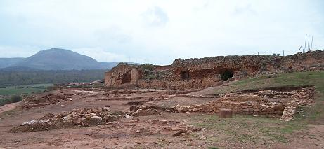
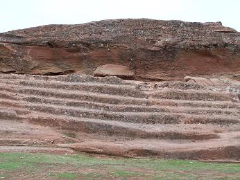
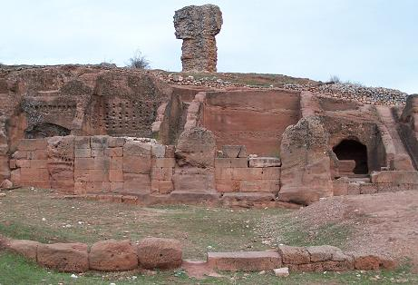
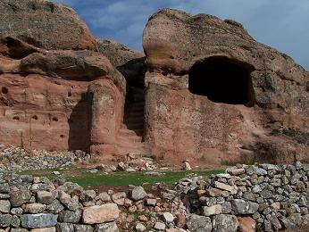

|
El yacimiento arqueológico de
Tiermes se localiza en Montejo de Tiermes, Soria.
|
 |
Las
primeras noticias sobre Termes aparecen con la conquista del Alto Duero por los ejércitos romanos 143 y 141 a.e.c, en relación con Numancia;
fue la última ciudad arévaca conquistada del Alto Duero, en el 98 a.e.c,
por el Cónsul Tito Didio, obligando a sus habitantes a trasladarse al llano.
En la época visigoda siglos VI-VII, su población se verá disminuida.
También se ha hallado restos de época islámica y sobre todo medieval, entre los
que destaca su ermita.
Los restos arqueológicos
más antiguos hallados en Tiermes corresponden a un poblado de la Edad del Bronce
situado bajo la necrópolis celtibérica. Los enterramientos excavados corresponden al rito de incineración.
La
Termes de época celtibérica la conocemos gracias a los textos antiguos y por los datos
aportados por la necrópolis, que proporcionan información sobre la
cultura material, el ritual funerario y la organización social de los termestinos.
|
|
|
|
Solamente algunas casas rectangulares de las que se conservan sus resto en lo
alto del cerro, podrían ser de época celtíbera. Este cerro se hallaba poblado
desde el siglo VI a.e.c.
El
asentamiento arévaco debió establecerse en la terraza superior e intermedia que
presentan una defensa natural de fuertes cortados verticales en la roca arenisca
del lugar, a excepción de su lado oriental.
Los restos arqueológicos visibles corresponden a la ciudad romana, que alcanzó
su máximo esplendor en el siglo I. De esta época destacan las imponentes
construcciones romanas de varios pisos, asentadas en la blanda de la arenisca roja, donde también excavaron sus estancias
subterráneas o bodegas, para conservar los alimentos.
Era ciudad importante, a la que llegaban y de la que partían diversas vías de
comunicación, que a juzgar por la
información recuperada y por los restos arquitectónicos conocidos, se prolonga en
el siglo II y tal vez en el III. De época Bajo
Imperial se carece casi por completo de información quedando algunos materiales
arqueológicos aislados, y durante el periodo visigodo aumenta la ausencia de
referencias en las fuentes documentales y arqueológicas.
Las casas y edificios de la Termes romana, fueron utilizados como cantera para la construcción en los pueblos
de alrededor, también el acondicionamiento de los terrenos para la agricultura
eliminó parte de la ciudad.
Las estructuras básicas de la ciudad se han
conservados intactas soterradas bajo acumulaciones de tierra de arrastre, a ello, hay que añadir la pervivencia de las edificaciones
romanas realizadas con muros de sillería o mampostería y la
conservación de casas particulares, calles y obras públicas. Blas Taracena
denominó a Tiermes como la Pompeya Española.
La
mayoría de los restos son edificios públicos y una construcción de carácter
privado, de la que se conoce en todas sus
proporciones.
|
 |
 |
A la
ciudad se accede por la denominada Puerta del Sol, labrada en la
arenisca para llegar al graderío escalonado en la roca, que formó parte de un
edificio para reuniones públicas. La llamada puerta del sol es uno de los tres accesos
a la ciudad. Se accede a través de un pasillo de 40m de longitud por 2.5
de anchura. Se conservan los agujeros de los quicios de la doble puerta.
También se observan en el suelo las rodadas de los carros. El denominado Graderío se interpreta como un teatro,
anfiteatro, área de reuniones o recinto sagrado. Esta dividido en varias
áreas y tendría unas dimensiones de 60x150m. La grada se adapta a la
topografía del cerro. En el lado Oeste hay una escalera de acceso.
Desde aquí se accede al Barrio Sur, donde la
arquitectura rupestre con la alineación de estancias, alacenas y escaleras
alcanza su mayor riqueza. Encima se conservan los restos de las Termas.
|
Por la escalera se bajaba al frigidarium. El
tepidarium con suelo de mosaico.
Al sur se halla un conjunto de casas celtiberas que
tuvieron su apogeo en época romana. Se construyeron escavado en la roca y
prolongando al exterior la casa con muros de mampostería. El conjunto esta
formado por once casas divididas en dos áreas comunicadas por una
escalera. Tuvieron dos plantas y sótanos de dos alturas.
La muralla data del siglo III, las casa perdieron
parte de su función domestica al ser tapiadas por la muralla. Se construyó
con grandes sillares en seco o unidas con grapas de hierro soldadas con
plomo. Su interior se rellenó de cal y cantos. El lienzo con sus torres
semicirculares protegían toda la ciudad excepto el lado oeste donde estaba
la defensa natural del cortado.
|
 |
|
La casa de las Hornacinas es la típica casa
celtibérico-romana. Recibe su nombre de los cuatro nichos horadados en sus
paredes, que servían para guardar vasijas para almacenar. Se accedía por
el norte por una escalera hoy tapiada y hacia el sur con otra habitación.
Junto a la escalera sobreelevado se halla el hogar con un canal para
recoger las cenizas. |
 |
|
 |
La casa con escalera central, esta dividida en dos
habitaciones separadas por una escalera. La casa de la derecha conserva
todo el espacio que se excavo en la roca. Es de tamaño medio tenia dos
entradas y un ventanal al sur. De la casa de la izquierda se mantiene la
pared interna y se observan los huecos tallados en la roca donde se
apoyaba la techumbre y los quicios de la puerta.
Al final de este barrio se halla la obra pública más importante; el
Acueducto que
trae el agua a la ciudad desde el nacimiento del río Pedro a unos
7km llegando a Tiermes por por un canal excavado en la roca y un acueducto
volado. El acueducto en la puerta oeste se dividía en dos ramales que
distribuía el agua por los lados norte y sur. El acueducto norte escavado
en la roca y cubierto con losas finaliza en el Castellum Aquae. El lado
sur se inicia en un pozo que eleva el agua hasta un profundo cabal
excavada en la roca. Luego discurre por una galería subterránea y tras un
tramo al aire sale a la casa del acueducto. El túnel tiene 140m excavados
en la roca.
La puerta del oeste era el acceso occidental a la
ciudad desde la poca celtibera conectando las tres plataformas que
componen el cerro. Se cree que era peatonal, y estaba cerrado por una
doble puerta. En la terraza superior hay una serie de elementos defensivos
y de vigilancia. En su interior hay varios pozos para almacenaje. Junto a
la escalera hay un tramo del acueducto que se dividía en los dos ramales.
|
La subida a la acrópolis se realiza por la Puerta del Oeste, la más monumental y
empinada, y una vez alcanzada la máxima altura se desciende hasta el Castellum Aquae,
los depósitos de agua con su red de canales, abastecidos por el ramal
norte del acueducto. Estos depósitos coronan el Foro donde se han localizado los
restos del templo imperial y las tabernae del
mercado, macellum, como edificios más significativos.
En el entorno
de la ermita se ha excavado buena parte de la necrópolis medieval que datan entre los siglos XI al XIV. Debajo
de estas existen restos arquitectónicos de época romana altoimperial.
El yacimiento se halla ubicado
en un paisaje de montañas, mesetas, valles y páramos, en el
límite de cuencas hidrográficas del Duero y Tajo, dotando a la ciudad de una posición
geoestratégica importante para el control de la zona. El cerro donde se ubica la
ciudad posee forma elíptica, con superposición de tres terrazas. En la
actualidad todavía no se tiene perfectamente delimitada la ciudad, el área
excavada no es muy importante en relación a la totalidad de superficie que ocupa
el yacimiento.
|